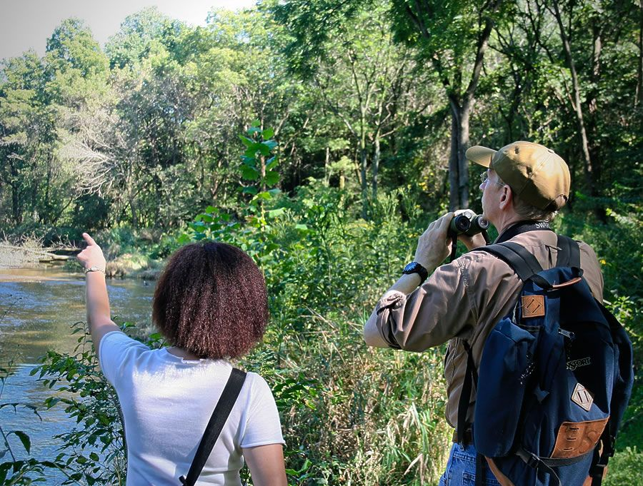
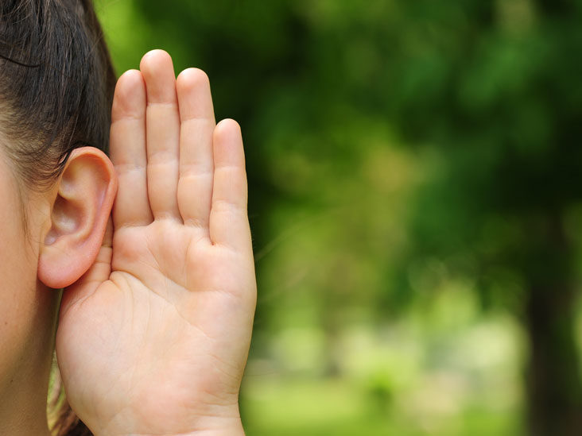
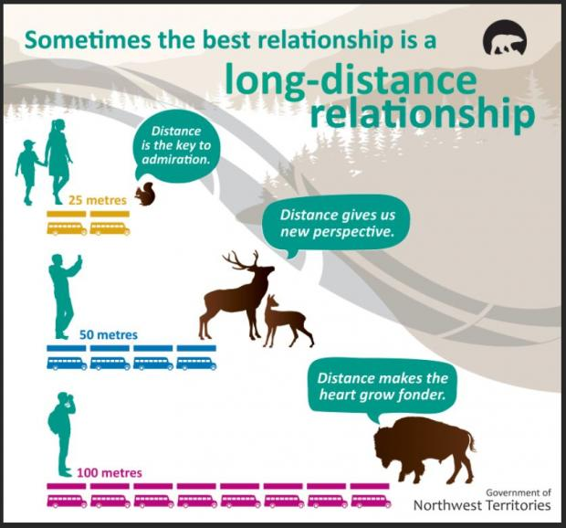
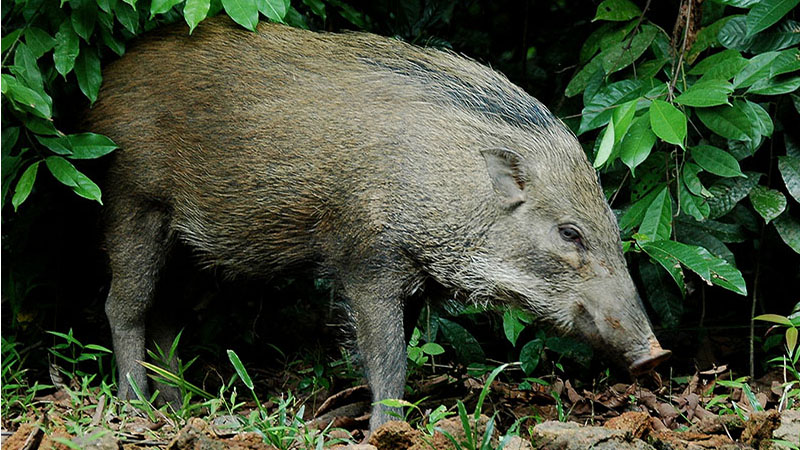

It will be exciting yet daunting to head out into the park and start looking out for animals. Will I see anything? Will I know what I am looking at? What if I scare the animal away?
This page will provide some tips and tricks from a not-so-amateur nature lover on how you can get started on observing animals in their natural habitats!
1. Check the internet/social media for sightings
The nature-loving community is active in Singapore and constantly shares the location of new animal sightings in Singapore.
Tap on these resources in the form of websites like iNaturalist or social media accounts by avid nature lovers and nature groups to keep yourself updated on the location of new sightings in Singapore.
2. Use your peripheral vision
Ever tried to find an animal but failed to locate it? It might not be as easy as you think! Just because we know the colour, shape and size of the animal does not mean they are easy to find. In fact, their morphology has evolved to help them survive and avoid detection from undesired individuals.
Instead of focusing on one spot of your vision, try looking far and paying attention to movement instead. Movement catches the attention more than colours, shapes and size. Once you detect movement, follow the direction of movement and then pay attention to the characteristics of the animal.
3. The sound of nature guides you
Animals tend to be well hidden away as part of their anti-predatory instincts. This would make them hard to spot for the novice nature lover. This is when the power of hearing comes in.
Animals call out to each other for various reasons - mating, camaraderie, communication etc. They do so as it is also difficult for them to find others of the same species when all of them are well-hidden. Humans can take advantage of their calls to help locate them too. Next time you visit the park, trying listening for the animals see if you can spot them better.
4. Distance is key
If you ever tried to observe an animal and move towards it, you will know how easily these animals can detect your presence and move away from your line of sight.
Instead of moving closer to the animal to get a closer look, try using your phone camera, binoculars or even a digital camera to help magnify the image. This will allow yoou to observe the animal and its behaviour at a distance without disturbing the animal. This is how you can observe the natural behaviours of the animals!
5. Nature is wild!
Wild animals are WILD animals. Do not expect them to be docile and human-loving.
We should not feed the animals and should not approach the animals with the intention of petting or handling them. The only exception to this is when the animal is injured AND you are a trained animal rescue officer. Otherwise, leave the animal alone and call ACRES and NParks instead.